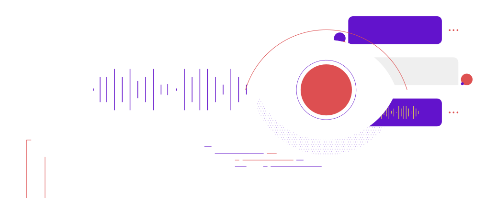

Sobre
o Infocast
O SENAI Infocast é o podcast da Escola SENAI de Informática sobre inovação, tecnologia e educação. Toda semana, um episódio diferente descomplicando conceitos sem deixar o conhecimento de lado e mostrando um pouco do universo #SENAIInfo de um jeito descontraído e leve.
Apresentadores
Escreva pra Gente
Participe do Grupo
Quer sugerir pautas, comentar episódios ou simplesmente se conectar com a equipe do Infocast?
Faça parte do nosso grupo no Facebook!
Receba Novidades